Perception Systems
End-to-end 3D mapping from recorded RoboSense LiDAR using MOLA (Modular Optimization for Localization and mApping): scan-to-map odometry, optional ground-aware preprocessing, and optional LiDAR–IMU fusion. The same site is mapped under two complementary configurations to illustrate how preprocessing and inertial aiding change the final reconstruction.
RoboSense, Ground Filtering, LiDAR-IMU Fusion, MOLA, GICP, Point Cloud, Odometry, 3D Reconstruction
YouTube - 3D Mapping Demo (RoboSense + MOLA)
YouTube - Full-Resolution LiDAR + IMU Fusion (Ground Filtering Disabled)
Most traditional mapping pipelines commit early to a single metric representation—such as one large fused point cloud—and discard the intermediate structure that produced it. MOLA takes the opposite approach.
MOLA treats the view-based map (also called a simple map) as the primary map
object. A view-based map is a pose graph in which each node stores a time-stamped sensor
observation (a keyframe) together with its SE(3) pose, rather than a pre-fused
geometric product. This preserves flexibility: from one session archive you can generate
multiple task-specific metric maps—dense point clouds, 2D projections, occupancy grids,
or localization-optimized representations—without repeating field acquisition.
Formal definitions, figures, and large-scale experimental results: Blanco-Claraco, “A flexible framework for accurate LiDAR odometry, map manipulation, and localization,” arXiv:2407.20465 (IJRR, 2025).
.simplemap vs. .mmMOLA separates the workflow into two artifacts with different roles:
| Aspect | .simplemap |
.mm (metric map) |
|---|---|---|
| Contents |
SE(3) keyframe poses + linked raw sensor observations
|
Geometric layers: point maps, voxel grids, 2D occupancy, etc. |
| Role | Session archive—re-run backends or generate new metric maps at any time | Deployment artifact for localization, planning, or visualization |
| Processing state | Minimally processed; retains observational richness | Filtered, merged, and layered for a specific downstream task |
.simplemap serializes the full mapping session—poses and attached
observations—in a reprocessable form. You can change filtering, re-run different backends,
or build entirely different metric products long after acquisition.
.mm is a derived geometric product, typically produced by
sm2mm (simple-map-to-metric-map) with a pipeline YAML, optimized for a
specific consumer (e.g. MM Viewer or a LiDAR localization node).
Principle: keep one authoritative session record (.simplemap), then
generate purpose-built metric products (.mm) as needed.
MOLA composes odometry and mapping front-ends from reusable, configurable processing blocks—similar in spirit to stacking layers in a deep learning framework. Typical blocks include:
Pose estimation uses an ICP-style iterative registration loop:
Practical enhancements include:
Scenario B below adds IMU fusion; the paper also documents strong LiDAR-only behavior (arXiv:2407.20465).
Both scenarios use the same MOLA stack on RoboSense ROS 2 bags from the same location; only preprocessing and fusion differ—so effects on map quality are directly observable (see figures and YouTube links above).
Scenario A — Ground-filtered, downsampled LiDAR (no IMU)
Scenario B — Full-resolution LiDAR + IMU fusion (no ground filtering)
Both are valid instances of the same architecture; the difference is front-end knob settings.
Follow these steps in order:
Step 1 — Data acquisition
Record a ROS 2 bag with RoboSense sensor_msgs/PointCloud2. For Scenario B, include
time-synchronized sensor_msgs/Imu (e.g. /imu/data).
Step 2 — Preprocessing (optional, configuration-dependent)
Step 3 — Run LiDAR odometry
Launch MOLA LiDAR odometry (e.g. mola_lidar_odometry / mola-cli with your YAML) to
estimate the trajectory and accumulate keyframes.
Step 4 — Save the simple map
Output a .simplemap file—your reprocessable session archive.
Step 5 — Build a metric map (optional)
Run sm2mm with a pipeline YAML to produce a .mm for MM Viewer or a localization
stack.
Step 6 — Evaluate the trajectory (optional)
Export keyframe poses to TUM format and analyze with evo:
pip3 install evo
sm-cli export-keyframes /path/to/map.simplemap --output kfs.tum
evo_traj tum kfs.tum -p --plot_mode=xy
The .simplemap / .mm split keeps MOLA workflows maintainable and future-proof. By
preserving the full session as a view-based archive, teams can:
Separating what the robot observed from what the stack should consume is the defining design principle of the MOLA framework.